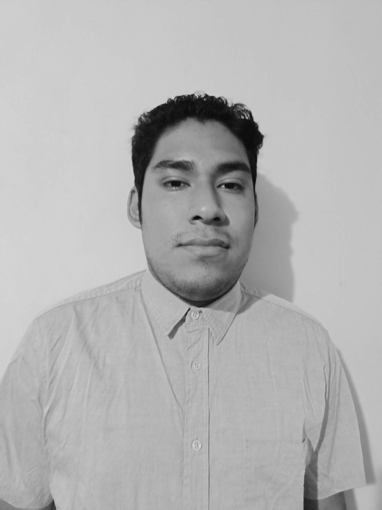

Un poco de mi
Mi nombre es Sebastian Ulises Flores Tapia, naci el 16 de julio del 2003 en Nezahualcoyotl, Estado de México. Actualmente tengo 19 años, soy estoy estudiando en la Universidad Tecnologica de Nezahualcoyotl, en la carrera de TI. Desarrollo de Software Multiplataforma
Durante mi niñez tuve la oportunidad de poder aprender varias cosas, como aprender a nadar, hablar lo mas basico del idioma ingles y frances, para la edad de los 8 años ya sabia nadar muy bien y el idioma frances se convirtio en mi favorito, tambien pude participar en mi primer torneo futbol en el cual mi equipo y yo logramos el 3er lugar y ganar un viaje como premio
Para mi juventud no logro lo que queria ya que no logre quedarme en la prepa que yo queria sin embargo siempre tuve la motivacion de salir adelante para poder seguir logrando lo que me propusiera, en esta etapa considero que ha sido de las mejores porque conoci muchas buenas personas, viaje mucho que es algo que considero muy impotante para mi
Actualmente he madurado y considero que me va bien porque no me falta, poco a poco estoy logrando mis objetivos esperando lograr acabar el TSU y la Ingeniera de la carrera que actualmente estoy estudiando
